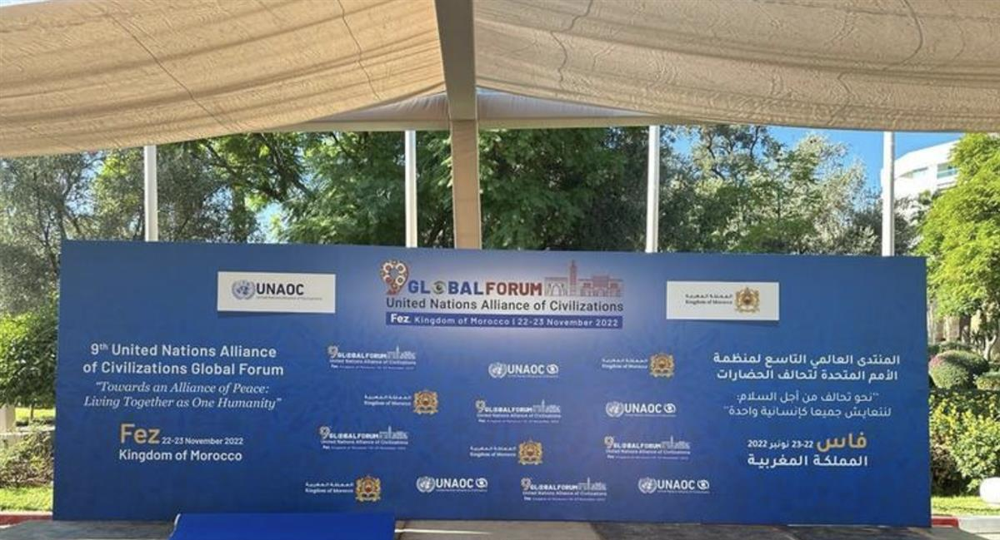
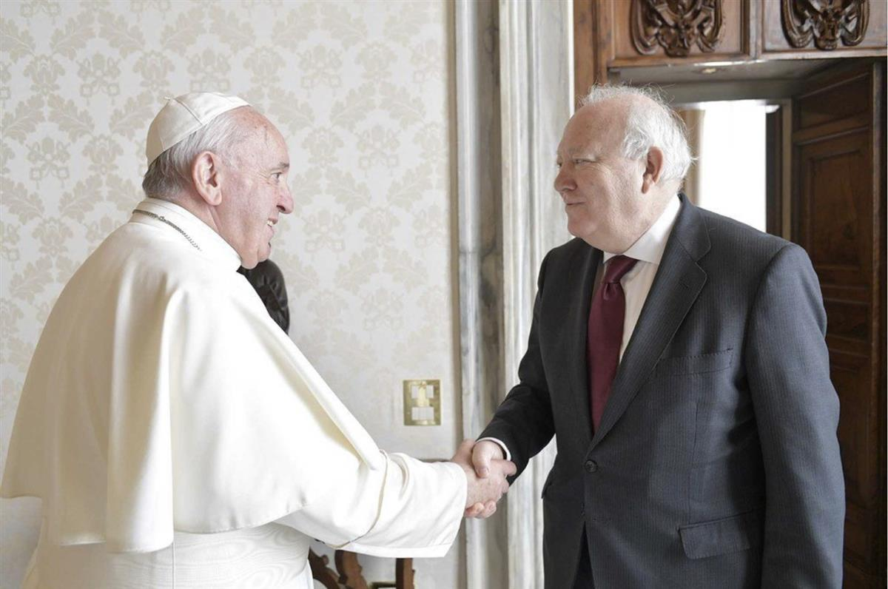
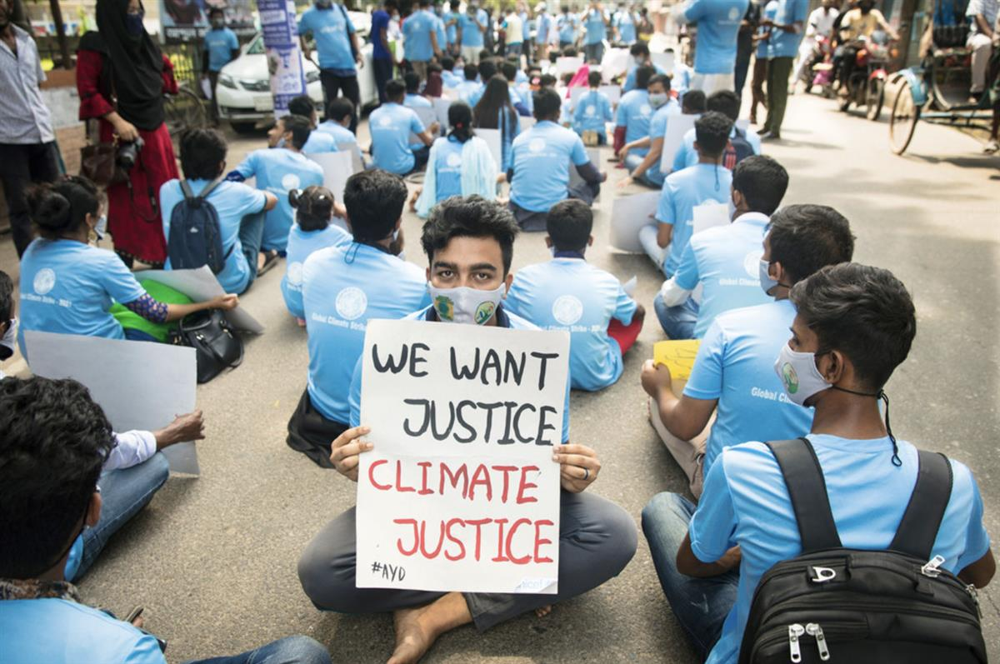

UNICEF/Kate Watson Pupils sing a song as part of a tolerance workshop at a school in Indonesia.
UNICEF/Kate Watson Pupils sing a song as part of a tolerance workshop at a school in Indonesia.
Peaceful coexistence is not ‘utopia’ but reality, says UN official fostering intercultural dialogue
21 November 2022 Peace and Security
At this transitional moment for humanity, it is important to uphold mutual respect, unity, and solidarity, the senior UN official promoting cross-cultural understanding and cooperation has stated.
Miguel Ángel Moratinos, High Representative for the UN Alliance of Civilizations (UNAOC), was speaking ahead of the start of its 9th Global Forum, which opens in Fez, Morocco, on Tuesday.
The theme this time around is Towards An Alliance of Peace: Living Together as One Humanity.
The Global Forum is the UNAOC’s highest-profile event, and this marks the first time that it is being held in Africa.
Mr. Moratinos said the King of Morocco, Mohammed VI, personally selected and recommended Fez as the host city because of its tremendous symbolism, being a strong patrimony of culture and religion.
He told UN News that this latest edition of the Global Forum is taking place at the right moment in human evolution, and also explained why religious leaders, women and youth are critical to building peaceful and just societies.
This interview has been edited and condensed for publication.
UN News: How important do you think it is to hold the Global Forum, and what do you expect from it?
Miguel Ángel Moratinos: Well, I think, we are at a turning point in the evolution of humankind, and we are in a transitional period. And this 9th Global Forum of the UN Alliance of Civilizations comes at the right moment because there is political controversy, there is a lot of anxiety, there are a lot of, let’s say, question marks. The UN Alliance of Civilizations with the Kingdom of Morocco, and of course with the support and presence of UN Secretary-General António Guterres, want to send a very strong message that living together is not a utopia, it’s a reality.

UN News/May YaacoubUN News: This is the 9th Global Forum of the UN Alliance of Civilizations, but the first to be held on the African continent. How significant is the location?
Miguel Ángel Moratinos: Well, that's a very important element. We are on the 9th Global Forum of the Alliance; we’ve been around the different geographical destinations, and Africa was missing. And I think that was the reason the Kingdom of Morocco decided to propose Morocco as an African territory to be the host of this important event.
It also comes at a turning point when African societies, African governments, African citizens, want to really be much more active in what is going to be the world of the 21st century. And, for sure the very strong presence of African Foreign Ministers, of African youth that are going to be present at this Forum, shows that Africa wants to be a very important actor in what is going to be the next century. So, I think that’s the beginning of Africa being much more involved, much more concerned, and much more represented, and we are extremely happy that it happened here in Fez, in Morocco, in Africa.
UN News: In your opinion, how can advancing interreligious, intercultural, and inter-civilizational dialogue help to build peaceful, cohesive and just societies?
Miguel Ángel Moratinos: You know, sometimes when we address the situation in the world – when we are of course extremely concerned about economic [crisis], financial crisis, or even political crisis, or when we have this common threat and common battle against climate change – sometimes we do not sense the importance that religious leaders, and interfaith and inter-religious dialogue, could contribute as an important asset for the movement in order to achieve our common goals.
Why? Because spirituality, you cannot ignore it. I’m not saying that there aren’t people who are atheists, or non-believers, but there is something that must move humankind. And this “something” is religion. It’s spirituality. When a priest, or imam, or Orthodox church says some message, it goes to the hearts and minds of so many people. So, we have to have them on board, and we have to create this sense that between religions and different faiths, there is an understanding, there is a respect. And I think that is the importance of their presence in this Forum.

Vatican Media: The High Representative of the United Nations Alliance of Civilizations (UNAOC), Miguel Moratinos, spoke with Pope Francis at the Vatican in 2019.UN News: When we talk about mediation in cultural and religious conflicts, we often forget about women. What role, in your opinion, can women play in bringing communities together?
Miguel Ángel Moratinos: Well, let me start with the importance of the culture and religious aspect when we address mediation processes. I'm a former diplomat, I’m now a politician, a High Representative, but I’ve been involved personally in mediation processes. Unfortunately, until just a few years ago, we didn’t incorporate religious and cultural dimensions into any negotiation process, any mediation process. So, that was my experience, and I realized that there was something missing. So, when I took over this new position of High Representative, I decided to include the cultural and the religious element in any mediation process.
But the second most important element is that women were absent, that women were not part of this negotiation process. When there are women negotiating, when there are women with understanding, and there are women engaged, you can find better solutions. And that’s the reason we have proposed a whole session about women’s mediation: how the voice and engagement of women have been missing. And we have the proof, because in the Sahel we have several projects and programmes where women are the ones who, at the community level, are taking important engagement and missions with results. So, women’s involvement in conflict prevention and conflict resolution is absolutely necessary.
UN News: The 9th Forum has several sessions involving youth. How does the UNAOC work with youth to change the current hate narrative, especially through social media?
Miguel Ángel Moratinos: Well, the youth are our main partners in all the work of the UN, because what we are trying to do is to improve conditions in the whole of society, in all the different nations, all the different governments. And how are we going to do this? Well, we are going to do so, of course, with the decision-makers, but mainly with the youth because they... are the main protagonists. So, we have to prepare them to change their values and their principles for the better; so that from the beginning they are sharing and defending diversity, [and understand] that you can have different points of view, but that this doesn’t mean that you have to be enemies or... disrespect the other.
So, I think the youth are our main ally. Without the youth, we will not be able to implement our mandate. And so that is the reason we are putting all our main projects and programmes into the hands of youth, because what I used to say in all my interviews and presentations to the youth is that if they are not the protagonists of the future, they are already the protagonists of today. And we are seeing how they are [calling for action], how they defend their aspirations, their dreams. So, we have to help them, to work with them, in order to have a better world for future generations.

© UNICEF/Jannatul Mawa Youth activists sit in the street as a form of strike in solidarity with the Global Climate Strike in Bangladesh.UN News: We have active wars around the world and amidst all of it, we have online hate propaganda and disinformation campaigns. How does UNAOC address these issues?
Miguel Ángel Moratinos: Well, I think that’s going to be the main message of the Forum. It’s a message of peace, of reconciliation, of understanding; that at the end of the day, sooner or later we have to talk to each other, even if there is no way at this moment to see how we can engage in some mediation processes.
So, I think we must underline the importance of sending a strong message of peace. And I think that’s the reason we are now calling ourselves Alliance of Peace, Alliance of Civilizations for Peace. So that is the main element, and I think [that] will be the main message that is going to be added to this 9th Global Forum in Fez.
SOURCE: UN NEWS